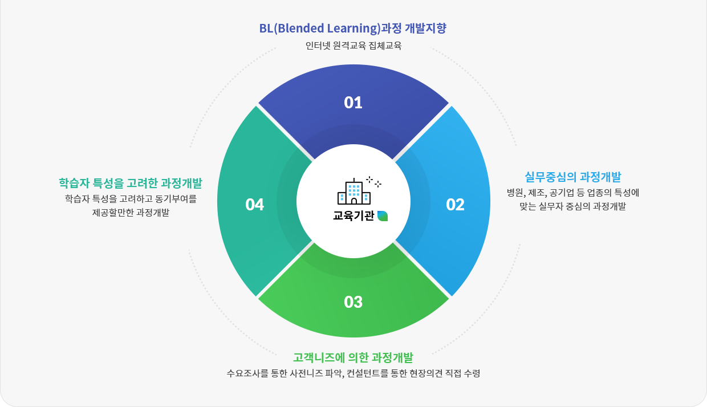

Refund process
교육과정 개발은 교과내용, 교과평가 등의 구분과 그에 따른 심사 항목에 적정한 심사가 되어야 등록될 수 있습니다. 실무에 도움이 되고 현실성 있는 교육과정들을 끊임없이 개발하고 제공해드릴 수 있도록 노력하고 있습니다. 무한경쟁의 기업경영 환경에서 자기주도형 학습에 적합한 과정개발을 통하여 학습자의 역량 개발 및 미래가치 창출을 도모하고 나아가 우리 산업계에 필요한 교육과정을 개발, 보급할 수 있도록 하겠습니다.
과정개발 전략 BL(Blended Learning), 실무중심, 고객니즈, 학습자 특성을 고려하여 과정을 개발하고 있습니다.
인터넷 원격교육 집체교육
병원, 제조, 공기업 등 업종의 특성에 맞는 실무자 중심의 과정개발
수요조사를 통한 사전니즈 파악, 컨설턴트를 통한 현장의견 직접 수령
학습자 특성을 고려하고 동기부여를 제공할만한 과정개발